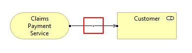
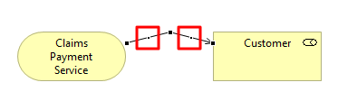

一条连接线（关系）可以有任意数量的弯曲点，这样连接就可以在图中形成弯曲和偏差。
要向连接添加弯曲点，首先选择连接。弯曲点“手柄”或圆点将出现在连接的中间：
连接弯点“句柄”
沿所需方向拖动弯曲点手柄。请注意，当您拖动手柄时，两个新的弯曲点手柄会添加到连接中：
连接弯点“手柄”出现
您可以继续选择并拖动这些手柄来创建新的折弯点。在创建每个新的弯曲点时，两个新的手柄将出现在选定手柄的两侧。
要删除弯曲点，请选择弯曲点的手柄并拖动它，使连接线变为直线。一旦连接线被拉直，弯曲点就会消失。
如果在“视图”菜单中打开“对齐网格”，折弯点会对齐网格。如果您需要更好地控制弯曲点的放置，您可以通过按住 Windows 上的 Alt 键、Linux 上的 Alt/Shift 或 Mac 上的 Ctrl 键来覆盖它。
注意 - 如果视图的连接路由器类型设置为“曼哈顿”，则无法将弯曲点添加到连接中。请参阅此处了解更多详情。